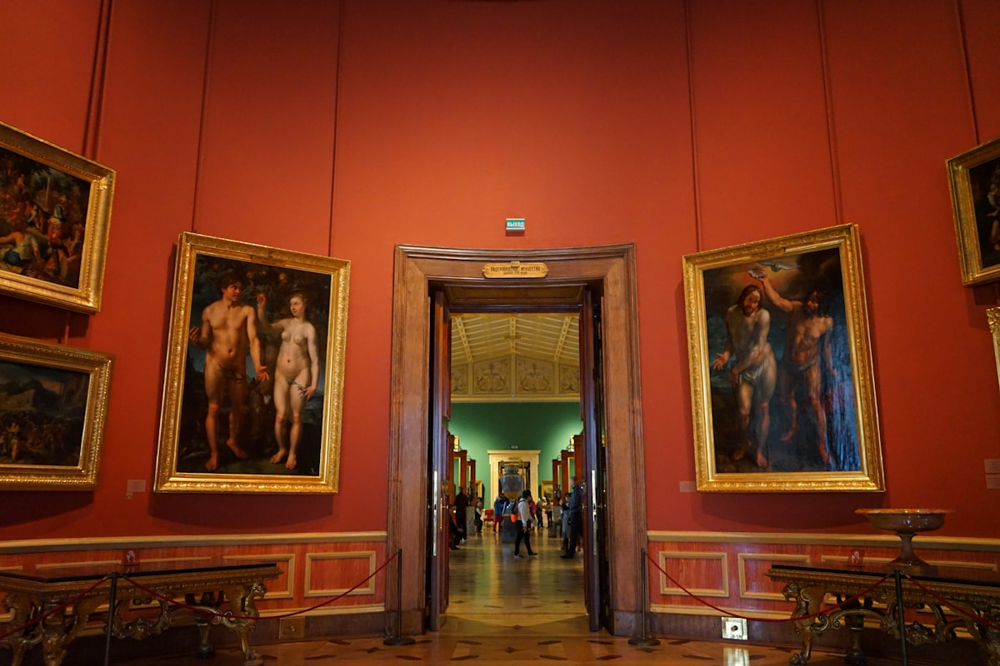
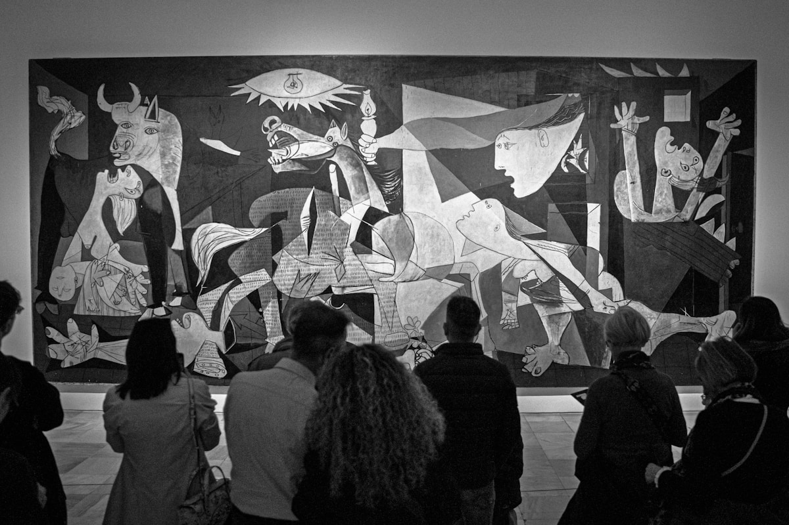
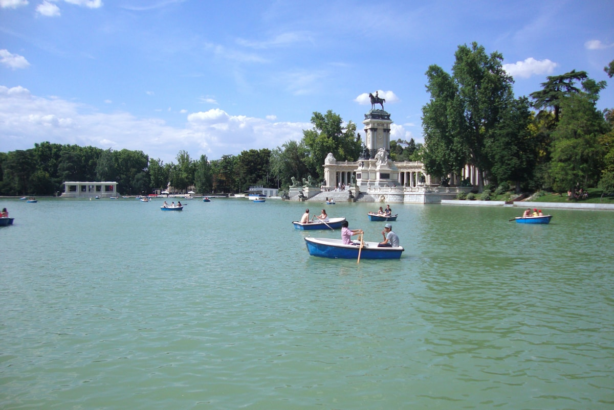

精选景点
Palacio Real de Madrid
欧洲规模最大的皇宫之一，18世纪波旁王朝巴洛克杰作，拥有3418个房间。腓力五世下令重建，外立面多利克与爱奥尼亚柱式层叠，王座厅天鹅绒与镀金令人叹为观止。皇家军械库珍藏中世纪武器，皇家药房保存17世纪药瓶。宫前东方广场与阿尔穆德纳大教堂相呼应，构成马德里最庄重的历史轴线。
国事活动期间临时关闭，出发前官网确认；内部多处不可拍照；强烈建议租借含中文的官方语音导览器
入场方式：电子票二维码入场，无需携带护照

Museo Nacional del Prado
世界三大博物馆之一，西班牙艺术的最高殿堂。馆藏逾35000件，委拉斯开兹《宫娥》、戈雅《1808年5月3日》与《黑色绘画》系列、博斯《人间乐园》等旷世名作云集于此。建筑本身是18世纪新古典主义杰作。
大包须寄存入口处；馆内全程禁止拍照；免费时段排队时间较长；强烈建议租中文语音导览器
入场方式：电子票二维码入场，无需携带护照

Museo Reina Sofía
西班牙现代与当代艺术最重要的殿堂，毕加索《格尔尼卡》是镇馆之宝。这幅11米宽的反战巨作令无数观者驻足沉默。达利、米罗的大型装置作品同样必看。由旧圣卡洛斯医院改建，现代玻璃电梯与18世纪砖石外墙形成强烈对比。
《格尔尼卡》禁止拍照；与普拉多步行约5分钟，可安排同日参观；建议留2小时以上
入场方式：电子票二维码入场，无需携带护照

Parque del Retiro
UNESCO世界遗产，马德里的城市绿肺，曾是波旁王室的私人园林。130公顷，15000株植物，人工湖可租划船，水晶宫举办免费当代艺术展，阿方索十二世纪念碑是最佳拍摄点。每周末有街头艺人，是感受马德里人日常生活节奏的最佳窗口。
水晶宫免费入内，可查询展期；清晨和傍晚光线最美；避免正午阳光暴晒
入场方式：免费入园，无需门票
交通指南
西班牙高铁网络枢纽，阿托查站发车直达塞维利亚、巴塞罗那、瓦伦西亚等主要城市。越早购票越便宜。
塞维利亚 ~2h30 · 巴塞罗那 ~2h30马德里-巴拉哈斯机场（MAD）为欧洲主要枢纽，多条国际直飞航线。地铁8号线直达市中心约30分钟。
市区 ~30分钟（地铁）南大巴站（Estación Sur）连接全国各地，票价实惠，班次密集。从格拉纳达、科尔多瓦等地出发是高性价比选择。
格拉纳达 ~5h · 科尔多瓦 ~4h旅行贴士
普拉多、王后索菲亚、提森博物馆三者相距步行10分钟内，建议安排两天分开参观，避免视觉疲劳。
马德里地铁覆盖全面，单程票约€1.5-2，10次票更划算。推荐购买Tarjeta de Transporte充值使用。
午餐14:00-16:00，晚餐从21:00才开始热闹。太阳门广场周边有大量平价Tapas小吃，是探索当地饮食文化的好起点。
5月（圣伊西德罗节）和9-10月天气最舒适。7-8月酷热，但博物馆内部清凉，是避暑好去处。
普拉多周一至六18:00后免费，王后索菲亚周一及周三至六19:00后免费。免费时段需排队，建议提早到场。
西班牙地理中心"零公里"标志所在地，是各地铁线交汇点，也是观察马德里市井生活的绝佳位置。